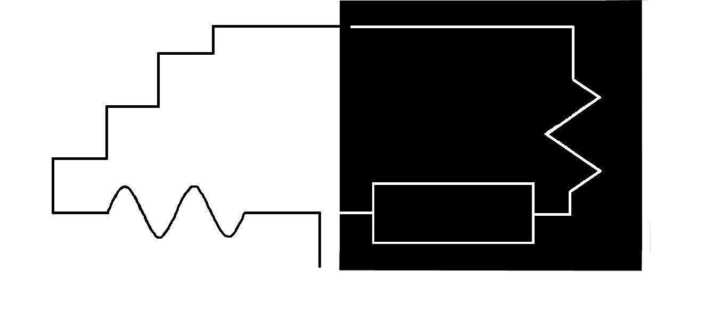

BLACK AND WHITE
EVENT DESCRIPTION:
Follow the path and save the minion.
On one side of the rectangular path shall be stationed a good minion and a BAD one on the other.
Dont forget to pick your, FRIEND!!!
PROBLEM STATEMENT:
The bot should traverse the grid, starting from the specified point, in the least possible time.
The bot should be able to choose the path of the good minion.
In case of generic bots the postioning of the good minion shall be decided by the orgaizers, on the spot.
For non-genric bots the minion shall be positioned as requested by the participant.
Both the parameters time and completion would be considered.
Each bot is given two runs.
The team can have a maximum of three touches, with appropriate penalty.
ARENA DESCRIPTION:
The arena shall be of black lines on white background and white lines on black background.
The path of the bot might contain curves, and turns of any angle, and broken lines.
The width of the line will be 3 cm
The dimensions of the arena are subject to change.
RULES:
1) A maximum of 3 participants per team.
2) The bot has to be developed and designed by the team itself.
3) The bot should be completely autonomous and should not receive any external assistance, wired or wireless during the run.
4) No Lego kits or Vega kits are allowed. If any robot is found sceptical, it will be immediately disqualified.
5) The bot must not damage the arena, else it will be disqualified.
6) Coordinators reserve the right to ask for the explanation of the bot.
7) No power supply will be provided at the sight of play.
8) The bot should fit within a cube of 25 cm at any point and violation of which will lead to the disqualification of the bot
9) Maximum voltage at any two point in the circuit should not exceed 12V.
10) Decision of the event organizers shall be treated as final and binding on all, and no further arguments shall be entertained.
JUDJING
The team to complete in the least possible time WINS!
Going in the path of the good minion will lead to a deduction of 60s .
If the bot is genric 100s shall be deducted from the total time.
Picking the wrong path will be awarded a penalty 30s .
Each touch will be awarded a penalty of 10s .
Incase of a touch, the bot can be placed anywhere in the path, prior to the touch.
Incase of more than three touches, a penalty of 50s shall be awarded and the bot should restart the race.
Malfunctioning of bot, during the run will, be awarded a penalty of 100s and the bot should restart the race, and time will be given for repair.
Decision of the event organizers shall be treated as final and binding on all, and no further arguments shall be entertained.
To test if the bot is generic, the shall be asked to take the race in both possible paths, and the least time would be considered
Main Track

Contact:
Harsha vardhan reddy 7708600271
Aravinthan 9659854313